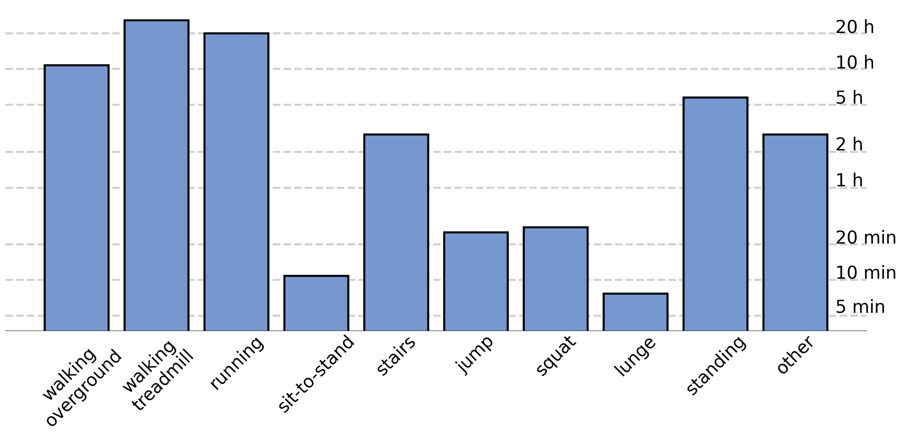

AddBiomechanics Dataset:
Capturing the Physics of Human Motion at Scale [Beta]
Aggregated data from all public AddBiomechanics uploads to enable large-scale machine learning
Below are (currently) the world's largest datasets of physically validated human motion, available for free under a Creative Commons BY 4.0 license. We provide individually scaled skeletons, their physical properties such as link masses and inertias, all the joint positions, velocities, and accelerations over time, along with all the measured contact forces with the ground and all joint torques computed with inverse dynamics.
We present several levels of data you can download. We have a high quality core dataset constructed from previously published datasets that we have manually reviewed for quality and correctness. We also have a larger dataset that includes all public uploads to AddBiomechanics, though may vary in quality.
AddBiomechanics 1.0 Dataset (High Quality Core Data):
Download Core Dataset View Documentation GitHub Example ML Project Read the Pre-Print
The dataset is composed of the following sources:
| Source | Subjects | Total Hours | GRF Hours |
|---|---|---|---|
| Lencioni et al. 2019 | 50 | 0.52 | 0.37 |
| Carter et al. 2023 | 50 | 21.60 | 19.80 |
| Santos et al. 2017 | 49 | 4.90 | 4.90 |
| Camargo et al. 2021 | 22 | 19.87 | 10.10 |
| Tan et al. 2023 | 17 | 4.40 | 4.40 |
| Moore et al. 2015 | 12 | 6.22 | 6.03 |
| Falisse et al. 2016 | 11 | 0.49 | 0.10 |
| Hamner et al. 2013 | 10 | 0.02 | 0.02 |
| Van der Zee et al. 2022 | 10 | 5.46 | 5.31 |
| Uhlrich et al. 2023 | 10 | 0.24 | 0.05 |
| Tan et al. 2022 | 9 | 3.73 | 3.73 |
| Wang et al. 2023 | 9 | 1.84 | 1.84 |
| Han et al. 2023 | 7 | 1.70 | 0.52 |
| Fregly et al. 2012 | 6 | 0.14 | 0.04 |
| Li et al. 2021 | 1 | 0.34 | 0.34 |
| Sum | 273 | 71.47 | 57.55 |
Version 1.0 of the AddBiomechanics Dataset contains standardized musculoskeletal models as well as position and physics information for over 24 million frames from 70+ hours of motion for 273 participants. Each of these frames contains optical marker locations and ground reaction moment and force measurements, along with estimated joint kinematics, estimated joint torques, and estimated center of mass kinematics. The dataset includes nine different activity types collected from 15 publicly available raw data sources, captured in 12 different laboratories. Each raw data source includes experimental optical motion capture and force plate data; refer to the corresponding publications for more details about the experimental data collection. All raw data was run through the same processing pipeline, presented in the paper. For the data sources that reported demographic information, the subjects have a mean age of 30.7 (+/- 15.8) years (range: 6-84), and mean BMI of 22.8 (+/- 3.4) (range: 11.7-34.4). The majority of the subjects are male (73%), and 23% are female. A portion of the datasets did not contain reported age (9%) or biological sex (4%).
Activity distributions are as follows:

Evaluating dataset quality. "Marker Error" is measured in centimeters RMS to evaluate the quality of pose reconstruction. "Linear Residual" is force discrepancy between model and raw data, normalized across subjects as body-weights (BW) RMS. "Angular Residual" is torque dynamic discrepancy at the model's root, normalized across subjects as body-weights * height (BW*h) RMS. The Hicks Thresholds for accuracy are presented with each metric.
| Measurement | Mean ± Std-dev | Hicks Thresholds for quality |
|---|---|---|
| Marker Error | 2.17 ± 2.44 (cm) | N/A |
| Linear Residual | 0.046 ± 0.027 (BW) | 0.05 BW |
| Angular Residual | 0.11 ± 0.02 (BW*h) | 0.1 BW*h |
User-Generated AddBiomechanics Dataset:
Larger, but not Manually Reviewed Data
We generate aggregate datasets from snapshots of the AddBiomechanics server data from time to time. We use scripts to attempt to automatically retarget the markersets on uploaded OpenSim models into standard model sets, so that the data can be compared and used to train standard models. We standardize on the Rajagopal 2015 model, which is quite commonly used. Original models are included in the dataset, to help diagnose any issues with the retargeting. A lot of collected data does not include arm markers, and we do not attempt to retarget that to the standard model with arms. We therefore present a (somewhat smaller) dataset of motions with arms, and a (somewhat larger) dataset of motions without arms.
Please note the LICENSE.txt file in each dataset, which lists the original uploaders of the data so that you can correctly credit them.
Snapshot 1: May 15, 2024
| OpenSim Model |
|---|
| Rajagopal Model with Arms |
| Rajagopal Model without Arms |